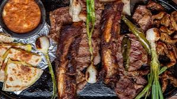

26.Sonora

- Platillo: Carne asada estilo Sonora
- Ingredientes: Cortes de res (rib eye, arrachera), sal, tortillas de harina, cebolla, chile verde.
- Historia: Viene de la tradición ganadera de la región y el gusto norteño por cocinar al carbón.
- Dato curioso: En Sonora, las tortillas de harina son igual de tradicionales que el platillo mismo.